南洋理工大学
机械工程 · 工学硕士
GPA 3.83 / 5.0001 / ROBOTICS & MECHANICAL DESIGN
面向人形 / 具身机器人、工业机器人与机电一体化研发岗位。 从结构设计、仿真到原型实验，关注可制造性、可靠性与系统闭环。
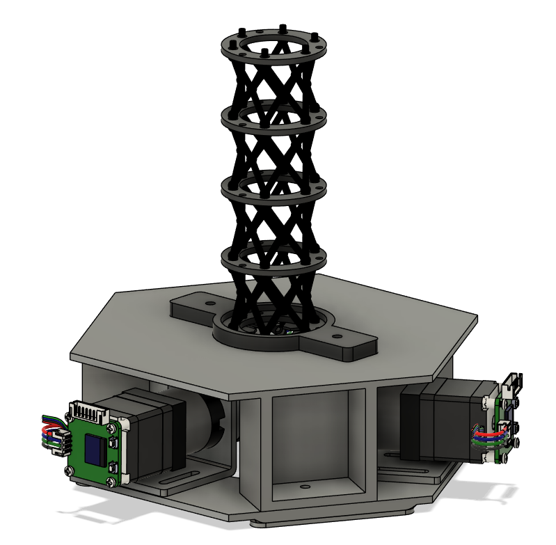
SELECTED / 01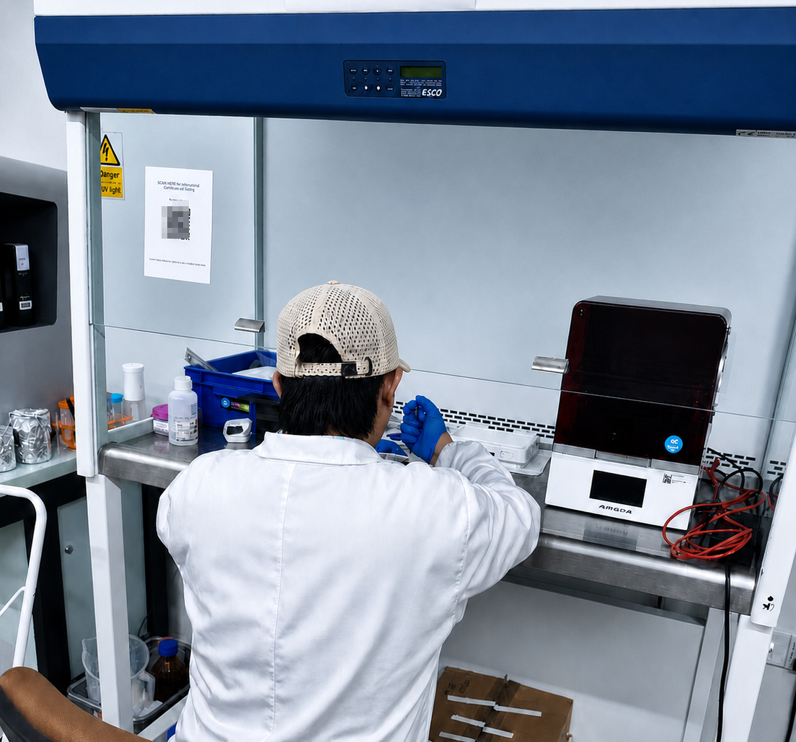
机器人机械研发｜结构设计｜仿真验证｜机电系统集成
正在南洋理工大学攻读 机械工程硕士。
将 柔性材料、嵌入式感知 与 机器学习 带进机器人研发。
充分了解用户需求，在安全的设计底线框架中，以技术理论与实践为核心，在一条可持续且可靠的产业链中设计出功能优先且经济高效的产品或系统。
机械工程 · 工学硕士
GPA 3.83 / 5.00机械设计制造及其自动化 · 工学学士
GPA 89.15 / 100完成 PVA 浇筑与 PLA 连接结构的设计、CPC 材料配比，并主导采用 Conformer + Cosserat 的神经网络数学模型进行机器学习，以捕捉弯曲抓取动作。
从连接模具到节段装配：
六张现场记录对应制备链中的关键节点。
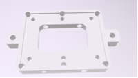
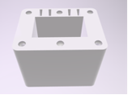
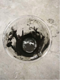
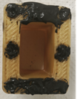
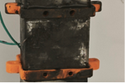
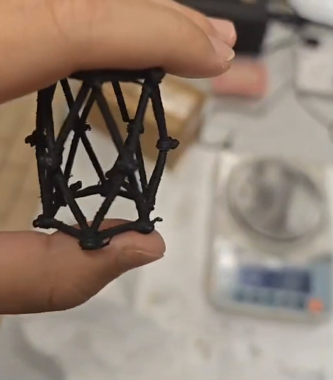
悬停播放：
观察单节机器人在无外部支撑条件下的连续形变。
通过 PVA 牺牲模、CPC 导电复合材料与端部连接件的连续装配，得到兼具柔顺变形与电阻感知能力的软体连续机器人结构。
可重复制备路线
PVA 模具定义 Yoshimura 折纸启发的圆柱晶格。
铜网嵌入上下端环，形成稳定低阻接触。
33 wt% 石墨 / PDMS 在导电性与柔顺性间折中。
四个 30 mm 节段构成约 120 mm 连续体，三根腱驱动。
从传感时序到末端预测，再到完整形状重建与抓取分类。
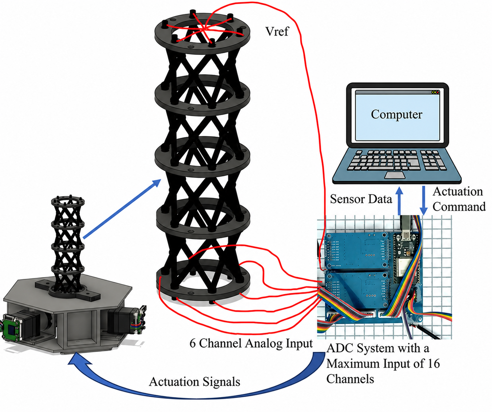
六通道电阻时序与三路绳驱输入同步采集，为状态预测提供观测与驱动条件。
从信号到状态
六通道电阻窗口 + 三路绳驱输入
多尺度时间卷积提取局部动态
多模态融合 + Transformer Encoder
末端 / 驱动预测 + Cosserat 完整形状
末端位置 RMSE
平均位置误差
四类抓取对象准确率
近实时形状估计更新
生产规划、预算与供应协调、加工质量与结构实现。
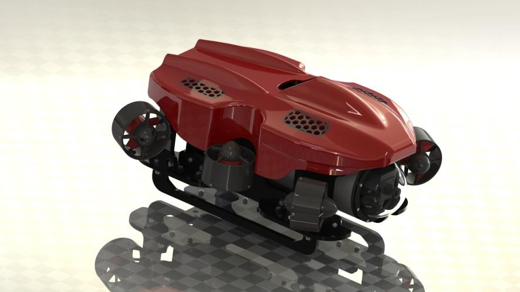
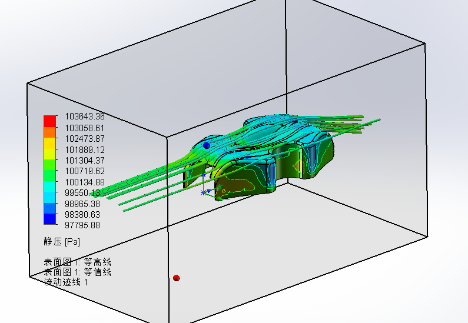
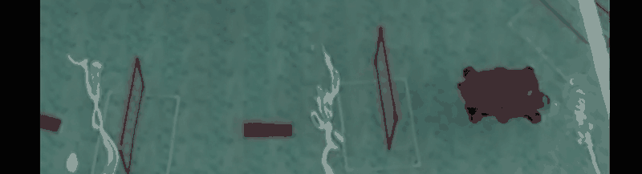
96% 目标识别准确率
2—5 m/s 原始材料中的设计航速指标
省级一等奖 “互联网+”团队成果
从切削工况反推功率与传动比，完成齿轮 / 六轴 / 箱体设计、总装、二维图纸、静力学分析与结构优化。
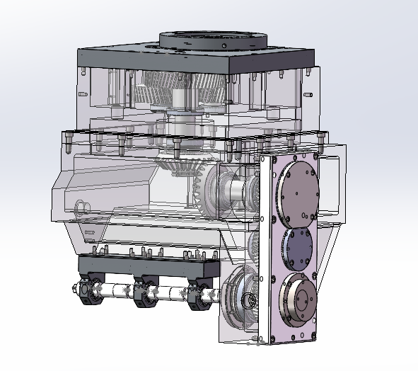
设计从气缸体油槽铣削任务出发，依次计算切削力、切削功率和电机功率；选定 11 kW、970 r/min 的 Y2-160L-6 B5 电机后，以展开式两级圆柱齿轮传动将主轴转速降至 150 r/min。
拓扑结果用于识别低载荷区域，再结合加工、装配与轴承支撑约束调整尺寸；
修改三维模型后重新求解，用同一组指标核对优化是否成立。
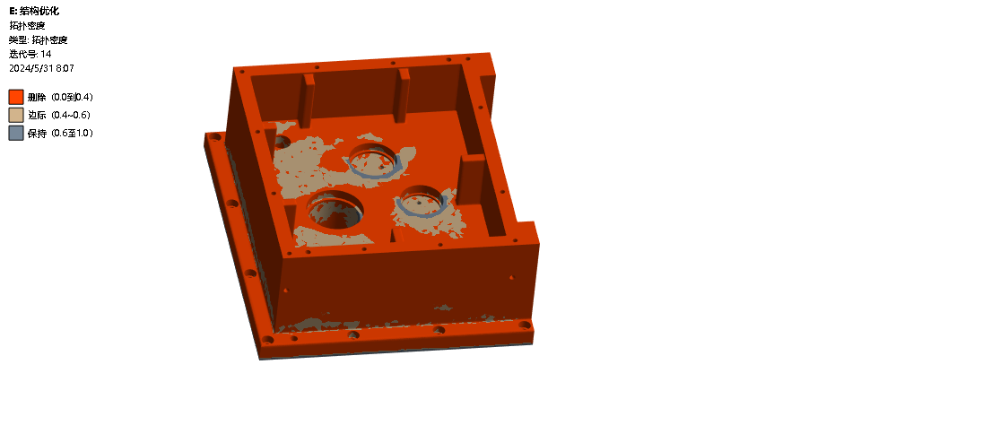
支撑轴位置 +0.05 mm · 四面箱壁 −0.05 mm
搭建传送带工位，识别三维物块位置并完成抓取、搬运与复位。
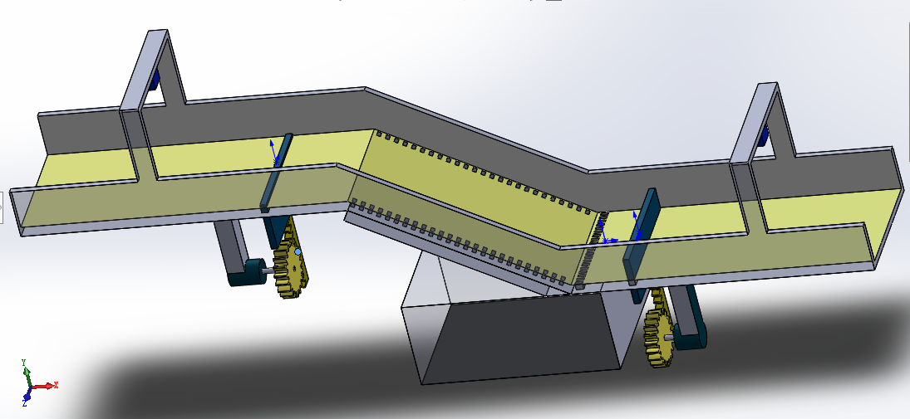
负责采集实际车库数据并根据坡道设计齿轮齿条结构、阻水闸门和双层排水通道及所有零件建模及总体装配
从装配基准、尺寸链到承载优化，把设计落实为可制造、可装配的结构方案。
SOLIDWORKS · ANSYS以现场现象为线索逐段验证，在安全与交付约束下定位根因、恢复性能。
TEST · TROUBLESHOOT以 GD&T、装夹基准与量测复核建立尺寸闭环，把图纸要求稳定转化为合格零件。
CNC · GD&T · QA现场约束焊接收缩导致右侧连接板 M20 孔纵向偏移 6.2 mm，影响装配基准。
工程动作以副车架上平面、纵向中心面与前横梁端面建立基准；通过 SolidWorks 尺寸链分析重构定位孔为 22×34 mm 长圆孔，并增设 8 mm 垫板。
结果ANSYS 校核满足 0.6g 制动工况，工艺方案收敛，项目周期缩短 1 个月以上。
现场约束1 台危险货物运输车出现滚筒式制动试验制动力不平衡，右轮制动力仅 18.9 / 12.1 kN。
工程动作依次检查摩擦片、制动间隙与缸推杆行程；再通过压力表和高压风枪分段测试供气管路，定位右前制动室入口管路锈蚀堵塞。
结果更换弯管并疏通气路后，车辆通过安全检测，制动性能恢复至可交付状态。
现场约束参与数控镗床轴承座孔加工时，轴承内孔 50 mm 与轴承座外圆同轴度要求 ≤0.02 mm，实测误差 0.06 mm。
工程动作按 GD&T 基准统一原则建立“端面—心孔—轴线”工艺基线；采用两顶尖装夹、预留 0.30 mm 磨削余量，并以三分尺与百分表复测跳动。
结果修研中心孔并调整尾座后，首件一次检验合格，形成可复用的图纸—CAD—设备参数核对流程。